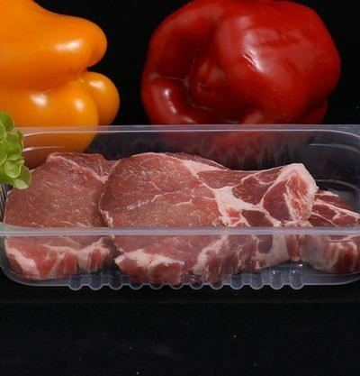

Kljub temu, da je to pravzaprav podtema od teme "Nanotehnologije in živila", sem se odločil, da napišem članek za nanoembalažo posebi. Tako sem se odločil predvsem, zaradi tega ker je veliko informacij na internetu in se mi je zdelo smiselno da jih strnem ter napišem le poglavitne.
Nekateri inovativni dosežki na področju nanotehnologije so močno preoblikovali prehrambno industrijo z revolucionarno embalažo za živila. K prehranskemu odtisu na okolje prispeva tudi geografski kriterij oziroma učinek transporta, kjer je uporaba nanodelcev zelo zaželjena, saj ohranja živila več časa sveža. To je za današnje čase zelo pomembno, ker morajo živila potovati po več sto kilometrov.
Za potrebe ohranjanja kakovosti živila med transportom z oddaljenih koncev sveta se uporablja več različnih pakiranj in embalaž, pri čemer je poseben poudarek predvsem na varnosti pakirane hrane. Večina raziskav se je osredotočila na preverjanje uporabe nanodelcev za zatiranje rasti mikrobov in upočasnitev oksidacije. Vsebnost nanodelcev v pametni embalaži vpliva na manjšo prepustnost kisika, boljše mehanske lastnosti materialov, zmanjšan vpliv UV-svetlobe ter večjo odpornost na toploto in zagotavlja antibakterijski učinek. V materialih za izdelavo embalaže so vgrajeni nanodelci kovin ali kovinskih oksidov (npr. srebro, titanov dioksid, cinkov oksid, magnezijev oksid), ki preprečujejo rast mikroorganizmov na njeni površini in s tem ščitijo živila
Ena izmed inovativnih možnosti uporabe nanotehnologij je zmanjšanje kvarjenja živil preko uporabe senzorjev, vgrajenih v embalaži. Nanosenzorje je mogoče uporabiti kot etikete ali premaze in tako dodati inteligentno funkcijo embalaži. Zasnovani so tako, da kažejo svežino hrane, zmanjšajo pokvarljivost s sprostitvijo konzervansov, prilagodijo okuse in hranilno vrednost z izločanjem barve, arom ali drugih dodatkov. Nanosenzorji zaznavajo tudi tesnenje vakuumske embalaže, zamrzovanje, taljenje in ponovno zamrzovanje preko sprememb temperature v določenem časovnem obdobju, kar je še posebej pomembno za spremljanje stanja živila med transportom in skladiščenjem
Na kratko nanotehnolohgija ima podoben učinek na živila in embalažo. Obe povezavi bosta oziroma sta ključna za naše preživetje.

Goveje meso v nanoembalaži